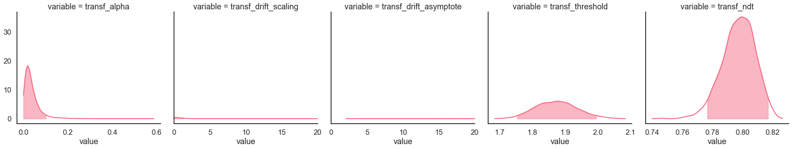
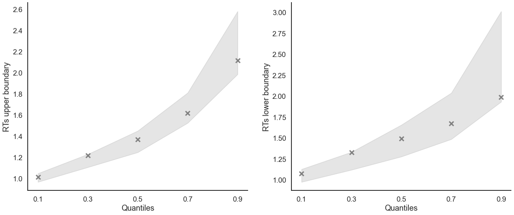
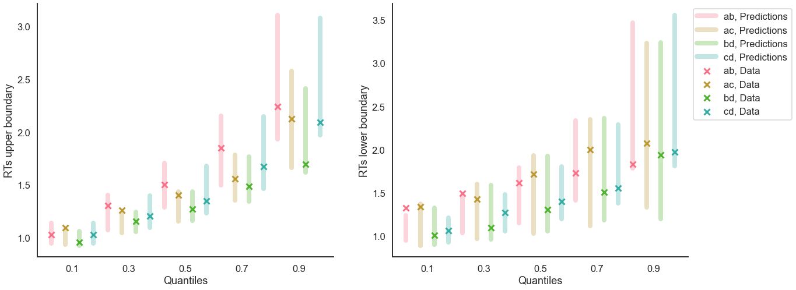

Fit the RLDDM on individual data¶
[1]:
import rlssm
import pandas as pd
import os
Import the data¶
[2]:
par_path = os.path.abspath(os.path.join(os.getcwd(), os.pardir, os.pardir))
data_path = os.path.join(par_path, 'data/data_experiment.csv')
data = pd.read_csv(data_path, index_col=0)
data = data[data.participant == 10].reset_index(drop=True) # Only select 1 participant
data.head()
[2]:
| participant | block_label | trial_block | f_cor | f_inc | cor_option | inc_option | times_seen | rt | accuracy | |
|---|---|---|---|---|---|---|---|---|---|---|
| 0 | 10 | 1 | 1 | 61 | 52 | 4 | 3 | 1 | 1.285418 | 0 |
| 1 | 10 | 1 | 2 | 54 | 37 | 4 | 2 | 1 | 1.577622 | 0 |
| 2 | 10 | 1 | 3 | 51 | 51 | 4 | 3 | 2 | 1.564731 | 0 |
| 3 | 10 | 1 | 4 | 50 | 35 | 3 | 1 | 2 | 1.217245 | 1 |
| 4 | 10 | 1 | 5 | 59 | 50 | 4 | 2 | 3 | 1.929781 | 0 |
Initialize the model¶
[3]:
# you can "turn on and off" different mechanisms:
model = rlssm.RLDDModel(hierarchical_levels=1,
separate_learning_rates=False,
threshold_modulation=False,
nonlinear_mapping=True)
Using cached StanModel
Fit¶
[4]:
# sampling parameters
n_iter = 3000
n_warmup = 1000
n_chains = 2
# learning parameters
K = 4 # n options in a learning block (participants see 2 at a time)
initial_value_learning = 27.5 # intitial learning value (Q0)
[5]:
model_fit = model.fit(
data,
K,
initial_value_learning,
warmup = n_warmup,
iter = n_iter,
chains = n_chains)
Fitting the model using the priors:
alpha_priors {'mu': 0, 'sd': 1}
drift_scaling_priors {'mu': 1, 'sd': 50}
drift_asymptote_priors {'mu': 1, 'sd': 50}
threshold_priors {'mu': 1, 'sd': 5}
ndt_priors {'mu': 1, 'sd': 1}
WARNING:pystan:Maximum (flat) parameter count (1000) exceeded: skipping diagnostic tests for n_eff and Rhat.
To run all diagnostics call pystan.check_hmc_diagnostics(fit)
WARNING:pystan:6 of 4000 iterations ended with a divergence (0.15 %).
WARNING:pystan:Try running with adapt_delta larger than 0.8 to remove the divergences.
WARNING:pystan:6 of 4000 iterations saturated the maximum tree depth of 10 (0.15 %)
WARNING:pystan:Run again with max_treedepth larger than 10 to avoid saturation
Checks MCMC diagnostics:
n_eff / iter looks reasonable for all parameters
6.0 of 4000 iterations ended with a divergence (0.15%)
Try running with larger adapt_delta to remove the divergences
6 of 4000 iterations saturated the maximum tree depth of 10 (0.15%)
Run again with max_depth set to a larger value to avoid saturation
E-BFMI indicated no pathological behavior
get Rhat¶
[6]:
model_fit.rhat
[6]:
| rhat | variable | |
|---|---|---|
| 0 | 1.018417 | alpha |
| 1 | 1.037281 | drift_scaling |
| 2 | 1.027634 | drift_asymptote |
| 3 | 1.000449 | threshold |
| 4 | 1.001236 | ndt |
get wAIC¶
[7]:
model_fit.waic
[7]:
{'lppd': -222.10485280567747,
'p_waic': 4.70099816274729,
'waic': 453.6117019368495,
'waic_se': 28.500117385818506}
Posteriors¶
[8]:
model_fit.samples.describe()
[8]:
| chain | draw | transf_alpha | transf_drift_scaling | transf_drift_asymptote | transf_threshold | transf_ndt | |
|---|---|---|---|---|---|---|---|
| count | 4000.000000 | 4000.000000 | 4000.000000 | 4000.000000 | 4000.000000 | 4000.000000 | 4000.000000 |
| mean | 0.500000 | 999.500000 | 0.037983 | 0.794183 | 36.160095 | 1.873717 | 0.797365 |
| std | 0.500063 | 577.422379 | 0.039915 | 4.429973 | 30.778307 | 0.063024 | 0.010966 |
| min | 0.000000 | 0.000000 | 0.000057 | 0.002300 | 2.043295 | 1.685766 | 0.739923 |
| 25% | 0.000000 | 499.750000 | 0.014890 | 0.013506 | 9.554932 | 1.828763 | 0.790487 |
| 50% | 0.500000 | 999.500000 | 0.027752 | 0.029816 | 28.618335 | 1.873455 | 0.798071 |
| 75% | 1.000000 | 1499.250000 | 0.048028 | 0.103515 | 54.034849 | 1.915392 | 0.805142 |
| max | 1.000000 | 1999.000000 | 0.587557 | 64.531895 | 190.530448 | 2.084672 | 0.826664 |
[9]:
import seaborn as sns
sns.set(context = "talk",
style = "white",
palette = "husl",
rc={'figure.figsize':(15, 8)})
[10]:
g = model_fit.plot_posteriors(height=5, show_intervals='HDI');
g.axes.flat[1].set_xlim(0, 20)
g.axes.flat[2].set_xlim(0, 20);

Posterior predictives¶
Ungrouped¶
[11]:
pp = model_fit.get_posterior_predictives_df(n_posterior_predictives=100)
pp
[11]:
| variable | rt | ... | accuracy | ||||||||||||||||||
|---|---|---|---|---|---|---|---|---|---|---|---|---|---|---|---|---|---|---|---|---|---|
| trial | 1 | 2 | 3 | 4 | 5 | 6 | 7 | 8 | 9 | 10 | ... | 230 | 231 | 232 | 233 | 234 | 235 | 236 | 237 | 238 | 239 |
| sample | |||||||||||||||||||||
| 1 | 1.262933 | 1.069933 | 1.784933 | 1.543933 | 1.083933 | 1.111933 | 2.414933 | 1.016933 | 1.438933 | 1.144933 | ... | 1.0 | 0.0 | 1.0 | 1.0 | 1.0 | 1.0 | 1.0 | 1.0 | 1.0 | 0.0 |
| 2 | 1.025510 | 5.076510 | 1.705510 | 1.124510 | 1.230510 | 1.659510 | 1.058510 | 2.201510 | 1.932510 | 1.383510 | ... | 1.0 | 1.0 | 1.0 | 1.0 | 1.0 | 0.0 | 1.0 | 1.0 | 1.0 | 0.0 |
| 3 | 1.563506 | 1.586506 | 1.463506 | 1.030506 | 0.960506 | 1.705506 | 1.394506 | 1.566506 | 1.668506 | 1.237506 | ... | 1.0 | 1.0 | 0.0 | 1.0 | 1.0 | 1.0 | 1.0 | 1.0 | 0.0 | 1.0 |
| 4 | 1.377698 | 1.081698 | 2.731698 | 2.004698 | 1.227698 | 1.097698 | 2.421698 | 2.383698 | 1.264698 | 2.216698 | ... | 1.0 | 1.0 | 1.0 | 1.0 | 1.0 | 1.0 | 1.0 | 1.0 | 1.0 | 1.0 |
| 5 | 1.211327 | 0.994327 | 1.420327 | 1.985327 | 0.982327 | 1.153327 | 1.323327 | 1.587327 | 1.402327 | 1.462327 | ... | 1.0 | 1.0 | 1.0 | 1.0 | 1.0 | 1.0 | 1.0 | 1.0 | 1.0 | 1.0 |
| ... | ... | ... | ... | ... | ... | ... | ... | ... | ... | ... | ... | ... | ... | ... | ... | ... | ... | ... | ... | ... | ... |
| 96 | 1.638157 | 0.958157 | 1.110157 | 1.300157 | 1.791157 | 1.347157 | 1.563157 | 1.162157 | 1.243157 | 2.055157 | ... | 1.0 | 1.0 | 1.0 | 1.0 | 1.0 | 0.0 | 1.0 | 1.0 | 1.0 | 1.0 |
| 97 | 1.278817 | 1.766817 | 1.079817 | 1.173817 | 1.616817 | 2.170817 | 1.960817 | 1.078817 | 1.794817 | 1.288817 | ... | 1.0 | 1.0 | 1.0 | 1.0 | 1.0 | 1.0 | 1.0 | 1.0 | 1.0 | 1.0 |
| 98 | 1.075953 | 1.300953 | 1.090953 | 1.380953 | 1.067953 | 2.644953 | 1.694953 | 1.517953 | 1.402953 | 1.505953 | ... | 1.0 | 1.0 | 1.0 | 1.0 | 1.0 | 1.0 | 1.0 | 1.0 | 1.0 | 1.0 |
| 99 | 1.154160 | 1.308160 | 1.598160 | 3.026160 | 2.950160 | 0.944160 | 1.161160 | 1.392160 | 1.694160 | 1.407160 | ... | 1.0 | 1.0 | 1.0 | 1.0 | 1.0 | 0.0 | 1.0 | 1.0 | 1.0 | 1.0 |
| 100 | 2.028603 | 1.326603 | 1.547603 | 1.012603 | 1.077603 | 3.032603 | 1.243603 | 1.232603 | 1.043603 | 0.913603 | ... | 1.0 | 1.0 | 1.0 | 1.0 | 1.0 | 0.0 | 1.0 | 1.0 | 1.0 | 0.0 |
100 rows × 478 columns
[12]:
pp_summary = model_fit.get_posterior_predictives_summary(n_posterior_predictives=100)
pp_summary
[12]:
| mean_accuracy | mean_rt | skewness | quant_10_rt_low | quant_30_rt_low | quant_50_rt_low | quant_70_rt_low | quant_90_rt_low | quant_10_rt_up | quant_30_rt_up | quant_50_rt_up | quant_70_rt_up | quant_90_rt_up | |
|---|---|---|---|---|---|---|---|---|---|---|---|---|---|
| sample | |||||||||||||
| 1 | 0.736402 | 1.597975 | 2.020770 | 1.046733 | 1.180133 | 1.408933 | 1.834733 | 2.707733 | 1.018933 | 1.226433 | 1.405433 | 1.629933 | 2.320933 |
| 2 | 0.803347 | 1.568459 | 2.537627 | 1.036110 | 1.224110 | 1.456510 | 1.908310 | 2.555710 | 1.007610 | 1.186710 | 1.328510 | 1.644910 | 2.335410 |
| 3 | 0.744770 | 1.592808 | 2.887339 | 1.006506 | 1.161506 | 1.417506 | 1.887506 | 2.220506 | 1.027106 | 1.195906 | 1.334506 | 1.637906 | 2.401806 |
| 4 | 0.748954 | 1.596832 | 1.956484 | 1.062198 | 1.234398 | 1.577698 | 1.925998 | 2.465298 | 1.015098 | 1.157698 | 1.359698 | 1.651698 | 2.269698 |
| 5 | 0.765690 | 1.517963 | 2.230927 | 1.002327 | 1.154827 | 1.437327 | 1.729827 | 2.573327 | 1.000527 | 1.139527 | 1.300327 | 1.564927 | 2.151527 |
| ... | ... | ... | ... | ... | ... | ... | ... | ... | ... | ... | ... | ... | ... |
| 96 | 0.686192 | 1.420931 | 1.572826 | 0.967357 | 1.108957 | 1.323157 | 1.570757 | 2.142957 | 0.958757 | 1.081057 | 1.277157 | 1.438257 | 2.128157 |
| 97 | 0.778243 | 1.513348 | 3.399520 | 1.023017 | 1.141617 | 1.316817 | 1.542817 | 1.993417 | 1.025817 | 1.198817 | 1.376317 | 1.621317 | 2.195317 |
| 98 | 0.757322 | 1.657665 | 2.967858 | 1.047453 | 1.262653 | 1.514953 | 1.938653 | 2.723953 | 1.015953 | 1.177953 | 1.370953 | 1.686953 | 2.368953 |
| 99 | 0.761506 | 1.491198 | 2.239910 | 1.002160 | 1.203360 | 1.428160 | 1.722160 | 2.474160 | 1.015160 | 1.135160 | 1.244660 | 1.503260 | 2.128160 |
| 100 | 0.769874 | 1.476908 | 2.132750 | 1.057803 | 1.188803 | 1.390603 | 1.567003 | 2.074803 | 0.990203 | 1.108203 | 1.276603 | 1.540803 | 2.212203 |
100 rows × 13 columns
[13]:
model_fit.plot_mean_posterior_predictives(n_posterior_predictives=100, figsize=(20,8), show_intervals='HDI');

[14]:
model_fit.plot_quantiles_posterior_predictives(n_posterior_predictives=100, kind='shades');

Grouped¶
[15]:
import numpy as np
[16]:
# Define new grouping variables, in this case, for the different choice pairs, but any grouping var can do
data['choice_pair'] = 'AB'
data.loc[(data.cor_option == 3) & (data.inc_option == 1), 'choice_pair'] = 'AC'
data.loc[(data.cor_option == 4) & (data.inc_option == 2), 'choice_pair'] = 'BD'
data.loc[(data.cor_option == 4) & (data.inc_option == 3), 'choice_pair'] = 'CD'
data['block_bins'] = pd.cut(data.trial_block, 8, labels=np.arange(1, 9))
[17]:
model_fit.get_grouped_posterior_predictives_summary(
grouping_vars=['block_label', 'choice_pair'],
quantiles=[.3, .5, .7],
n_posterior_predictives=100)
[17]:
| mean_accuracy | mean_rt | skewness | quant_30_rt_low | quant_30_rt_up | quant_50_rt_low | quant_50_rt_up | quant_70_rt_low | quant_70_rt_up | |||
|---|---|---|---|---|---|---|---|---|---|---|---|
| block_label | choice_pair | sample | |||||||||
| 1 | AB | 1 | 0.75 | 2.049033 | 1.861715 | 1.215533 | 1.493133 | 1.261933 | 1.537933 | 1.385933 | 2.341733 |
| 2 | 0.65 | 1.672710 | 1.528835 | 1.153710 | 1.194110 | 1.548510 | 1.394510 | 1.751310 | 1.922710 | ||
| 3 | 0.55 | 1.501656 | 0.745925 | 1.239906 | 1.102506 | 1.471506 | 1.159506 | 1.657906 | 1.648506 | ||
| 4 | 0.75 | 1.343298 | 1.370879 | 1.110298 | 1.043498 | 1.464698 | 1.161698 | 1.526298 | 1.313698 | ||
| 5 | 0.65 | 1.492577 | 2.332409 | 1.176527 | 1.166127 | 1.297327 | 1.237327 | 1.693927 | 1.416327 | ||
| ... | ... | ... | ... | ... | ... | ... | ... | ... | ... | ... | ... |
| 3 | CD | 96 | 0.55 | 1.266957 | 1.404526 | 1.086357 | 1.191157 | 1.123157 | 1.262157 | 1.181957 | 1.365157 |
| 97 | 0.60 | 1.652267 | 0.660315 | 1.150917 | 1.331017 | 1.527317 | 1.603817 | 2.327617 | 1.847717 | ||
| 98 | 0.55 | 1.756253 | 0.798266 | 1.631753 | 1.265953 | 1.652953 | 1.288953 | 2.349353 | 1.884953 | ||
| 99 | 0.70 | 1.721210 | 3.783809 | 1.402160 | 1.234060 | 1.556660 | 1.314660 | 1.684660 | 1.701360 | ||
| 100 | 0.70 | 1.791353 | 2.759446 | 0.991603 | 1.474003 | 1.134103 | 1.665103 | 1.659103 | 1.834503 |
1200 rows × 9 columns
[18]:
model_fit.get_grouped_posterior_predictives_summary(
grouping_vars=['block_bins'],
quantiles=[.3, .5, .7],
n_posterior_predictives=100)
[18]:
| mean_accuracy | mean_rt | skewness | quant_30_rt_low | quant_30_rt_up | quant_50_rt_low | quant_50_rt_up | quant_70_rt_low | quant_70_rt_up | ||
|---|---|---|---|---|---|---|---|---|---|---|
| block_bins | sample | |||||||||
| 1 | 1 | 0.700000 | 1.602333 | 1.979790 | 1.158733 | 1.141933 | 1.284933 | 1.326933 | 1.535933 | 1.756933 |
| 2 | 0.566667 | 1.757410 | 1.151978 | 1.383910 | 1.077710 | 1.912510 | 1.238510 | 2.361110 | 1.508510 | |
| 3 | 0.466667 | 1.813140 | 1.656559 | 1.101506 | 1.148406 | 1.655006 | 1.530006 | 1.874006 | 2.292106 | |
| 4 | 0.566667 | 1.899765 | 0.471722 | 1.463898 | 1.342298 | 1.783698 | 1.718698 | 2.064898 | 2.397498 | |
| 5 | 0.433333 | 1.572861 | 1.098442 | 1.180327 | 1.087927 | 1.458327 | 1.264327 | 1.775127 | 1.447327 | |
| ... | ... | ... | ... | ... | ... | ... | ... | ... | ... | ... |
| 8 | 96 | 0.862069 | 1.374777 | 2.498250 | 1.055157 | 1.124157 | 1.142157 | 1.198157 | 1.422057 | 1.367757 |
| 97 | 0.862069 | 1.655334 | 0.906741 | 1.427517 | 1.215217 | 1.499317 | 1.459817 | 1.592817 | 1.846817 | |
| 98 | 0.827586 | 1.357953 | 2.034553 | 1.469153 | 1.014053 | 1.689953 | 1.115453 | 1.845153 | 1.261953 | |
| 99 | 0.862069 | 1.354539 | 0.819861 | 1.521060 | 1.143760 | 1.748660 | 1.229160 | 1.941960 | 1.382560 | |
| 100 | 0.965517 | 1.464017 | 2.051352 | 1.133603 | 1.094103 | 1.133603 | 1.317603 | 1.133603 | 1.514103 |
800 rows × 9 columns
[19]:
model_fit.plot_mean_grouped_posterior_predictives(grouping_vars=['block_bins'],
n_posterior_predictives=100,
figsize=(20,8));

[20]:
model_fit.plot_quantiles_grouped_posterior_predictives(n_posterior_predictives=100,
grouping_var='choice_pair',
kind='shades',
quantiles=[.1, .3, .5, .7, .9]);

[21]:
model_fit.plot_quantiles_grouped_posterior_predictives(
n_posterior_predictives=300,
grouping_var='choice_pair',
palette = sns.color_palette('husl'),
intervals_kws={'alpha': .3, 'lw':8},
hue_order=['AB', 'AC', 'BD', 'CD'],
hue_labels=['ab', 'ac', 'bd', 'cd']);
